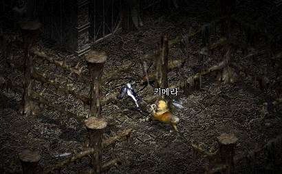
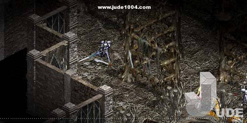
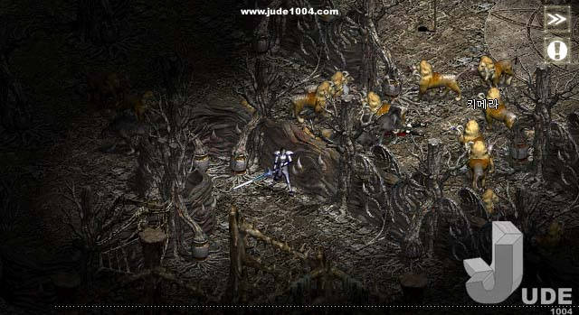
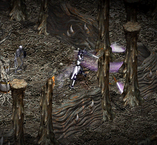
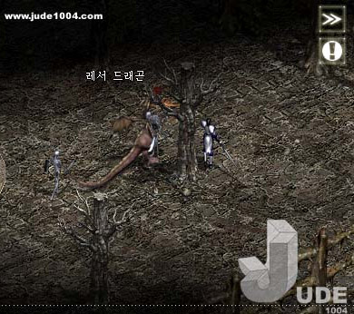
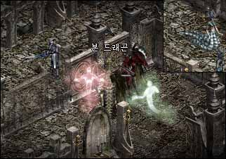
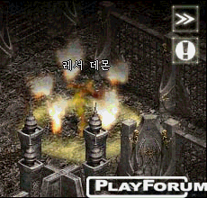

|
2002年12月30日
奧曼塔簡介
來源：Jude1004.com
英文翻譯：Lineage Compendium
第十二章除了更新了亞丁城外，亦加入了一共十層的奧曼塔(Omen's Tower)，即使在第一層，奧曼塔怪物的難度亦是很高。

圖中的騎士有-69防，但新怪物客邁拉(Chimera)每下仍能扣40-50HP及附加毒攻擊。即使用+9瑟魯基之劍，它仍是非常難應付。

在二樓大家可以找到魔狼(Dire Wolf)，在三樓可以找到活彎刀(Dancing Sword)，基本上玩家是不能同時應付三把活彎刀的攻擊。

來源：Jude1004.com，Lineage Playforum
英文翻譯：Lineage Compendium
而在四樓及五樓的怪物大致和一至三樓的相同，但數目比一樓至三樓更多，更多的活彎刀、魅杜莎(Medusa，蛇女的加強版）、客邁拉與魔狼，下圖將會顯示活彎刀的神速。

而Lineage Playforum發現在五樓亦會出現幼龍(Lesser Dragon)，在它附近亦會有其他怪物，幼龍的攻擊頗強，-84防的玩家發覺幼龍有時會損10HP，但有時亦會損500HP，幾乎秒殺！那位玩家感嘆：盔甲有用嗎？

在塔中是沒有通道前往六樓，要前往六樓，唯一的方法就是殺掉塔中的怪物去取得指定傳送（奧曼塔六樓）的卷軸，因此這將奧曼塔分成兩部分，六樓以上只有殺掉強勁的怪物才可前往。
Playforum的記者成功前往較上的層數。在六至八樓，我們可以找到舊有的怪物如鬼魂，死神與高骨。同時亦有新怪物如活彎刀、魅杜莎、夢魔(Nightmare)與骨龍(Bone Dragon)。

骨龍比幼龍還要強呢（上圖紅鬼魂與死神之間的就是骨龍，死神右上方是小惡魔）！
在九樓開始會出現小惡魔，他有極強的攻擊，當然他不會是孤獨的，在同層亦會出現其他的怪物。Lineage Playforum說塔中的怪物會掉祝防祝武，而六至十樓基本上只有60級以上玩家才能生存。

最後，假如你能上到10樓，你可能會找到塔中的首領妖巫(Lich)，我們亦預計炎魔(Balrog)會有那裡出現。那麼其他的首領如炎魔與變形怪首領會有那裡出現？而反王肯恩會否在攻第一次城後便會消失呢？ |